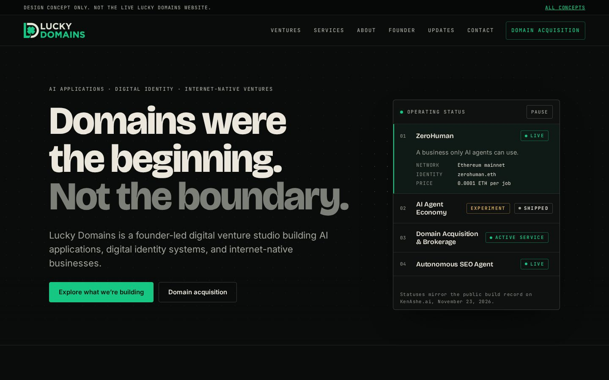
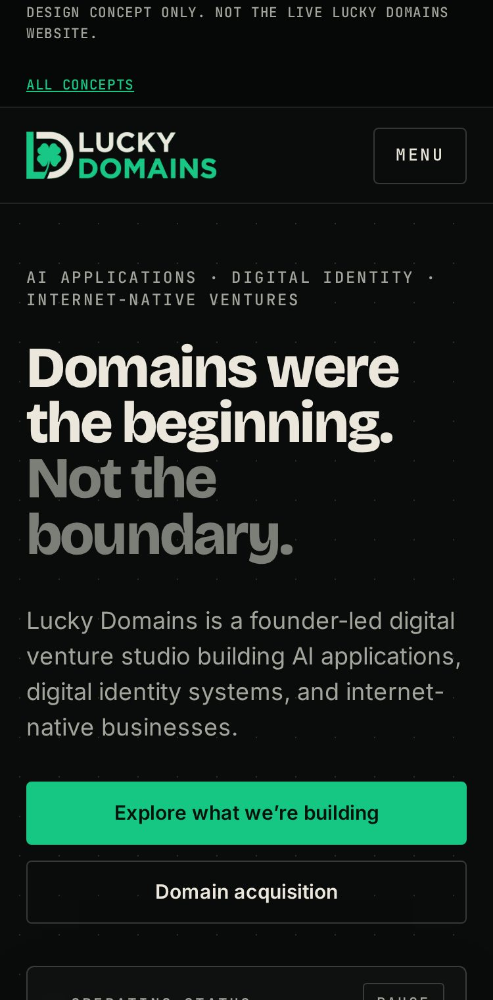
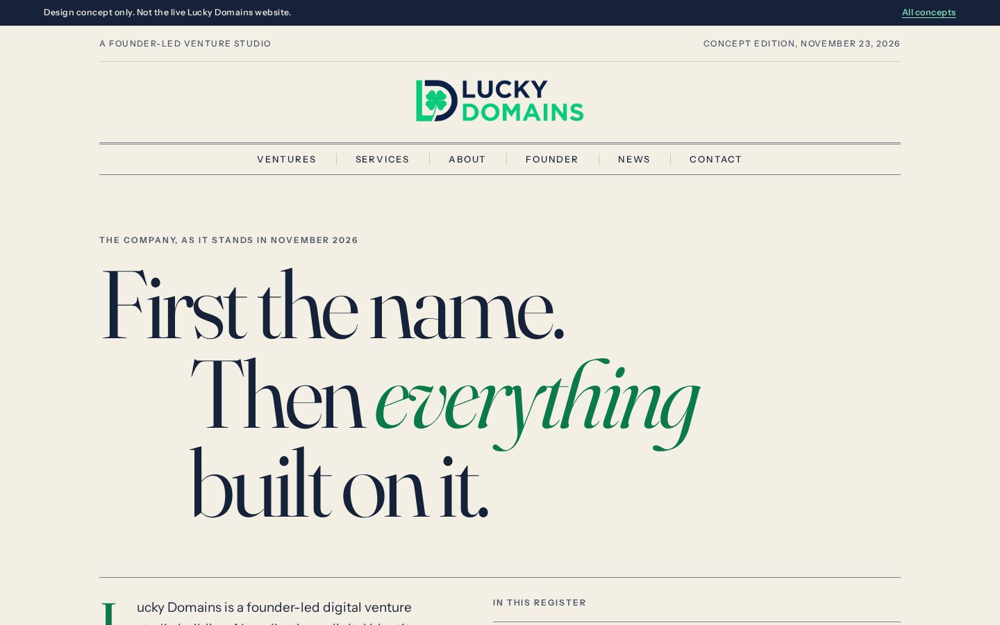
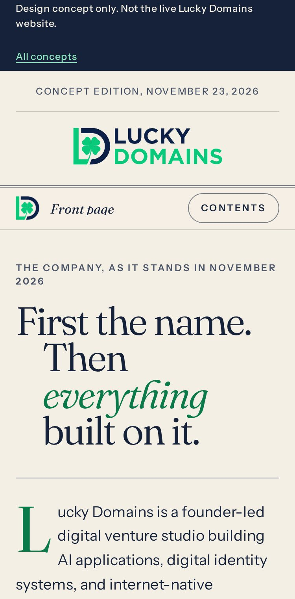
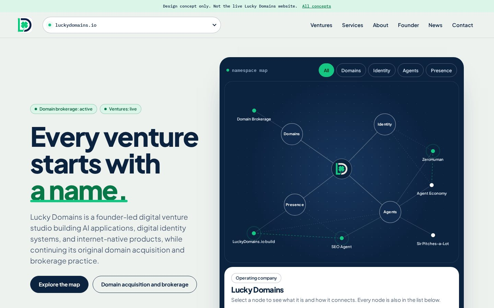
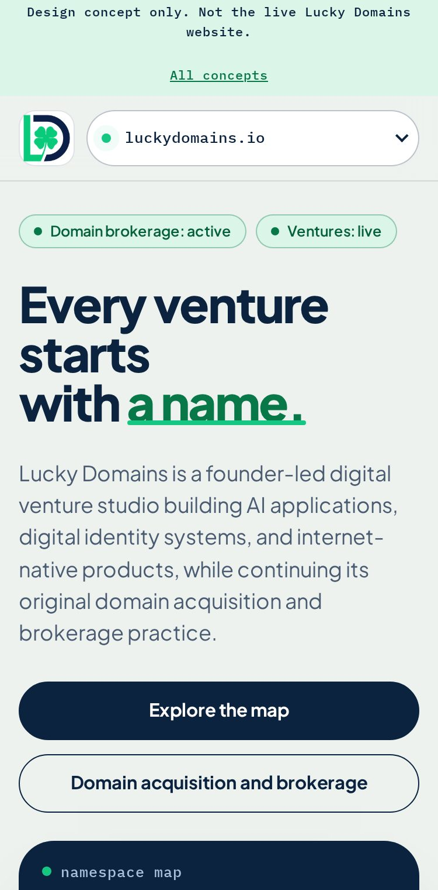
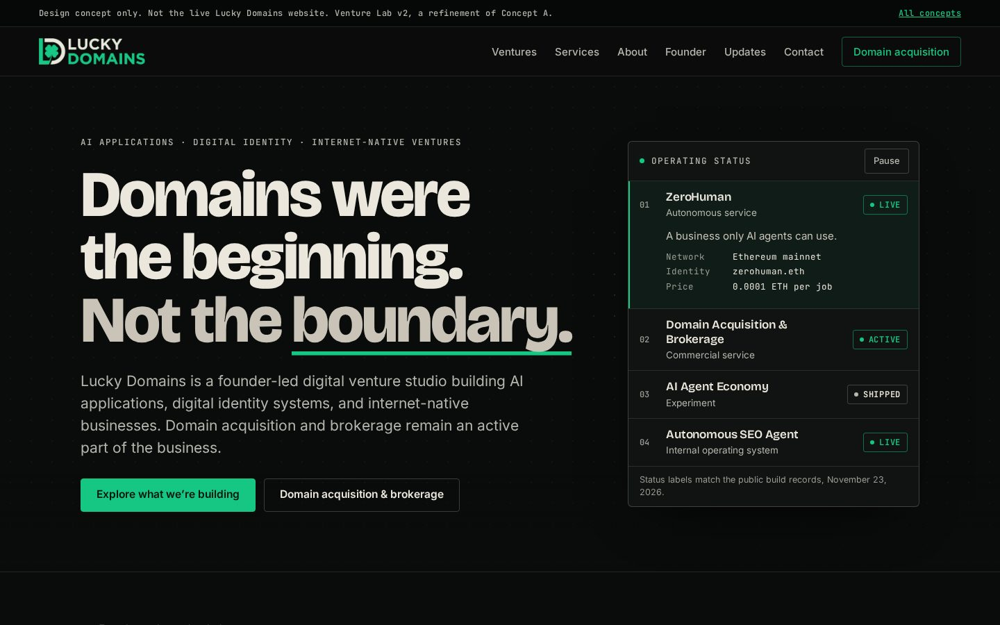
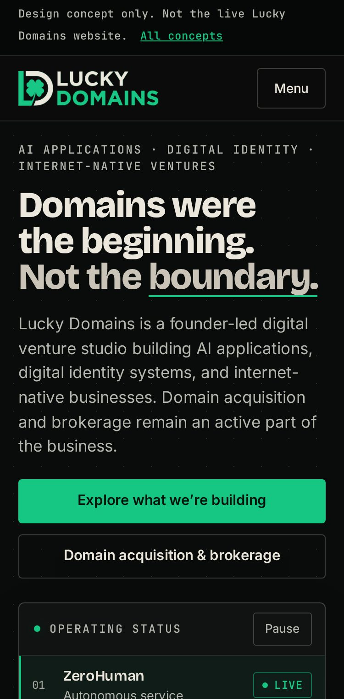

Current round
Phase 2: three light concepts for a digital presence studio
Phase 2 corrects the business direction: websites, search, digital identity, AI visibility, and domains. Everything below on this page is Phase 1, kept as an archive and not a finalist.
Open the Phase 2 conceptsPhase 2 comparison
Phase 1 archive · Review, November 23, 2026
Proposed redesign concepts
Three complete directions for a future LuckyDomains.io, built on one shared set of facts so the differences are design, not content. These are review concepts, not the live site.
These are proposed design directions only. They do not modify LuckyDomains.io, KenAshe.ai, production repositories, DNS, forms, or integrations.
Positioning used in all three: Lucky Domains is a founder-led digital venture studio building AI applications, digital identity systems, and internet-native products, while continuing its original domain acquisition and brokerage practice.


Concept A
Venture Lab
A premium digital venture studio meets an experimental technology lab. Dark, precise, and built from real evidence: transaction payloads, ENS records, status labels.
- Dark graphite
- Monospace metadata
- Asymmetric, editorial
- Evidence as imagery
- Quietly technical
- Motion and interaction
- Cursor-responsive dot field, an operating-status stack that cycles and pauses, a section-aware progression rail, proximity spotlight on venture cards, and scroll depth on artifacts.
- Best suited for
- Signalling that Lucky Domains builds unusual internet businesses, to technical, crypto-native, and investor-minded visitors.
- Tradeoff
- The furthest from today's site. Brokerage clients who expect a conventional services firm may find it less approachable, and the logo's navy needs a reversed treatment on dark.
Explore concept A: Venture Lab
VenturesServicesAboutFounderNewsContact


Concept B
The Register
A founder-owned company's journal of record. Warm paper, ink, and one green, with ventures entered like a register and told as editorial features.
- Warm paper, light
- Serif editorial type
- Register and features
- Original logo, full color
- Calm and literate
- Motion and interaction
- Variable-font headlines whose weight follows scroll, a running head with reading progress and section-aware title, a history line that draws as you scroll, cursor-following preview plates, and a page tone that shifts between paper and wash.
- Best suited for
- Trust and longevity: a holding company with a record. The most comfortable home for domain brokerage clients and for media.
- Tradeoff
- Reads less like a technology lab. It depends on good writing: thin copy would make it feel empty faster than the other two.
Explore concept B: The Register
VenturesServicesAboutFounderNewsContact


Concept C
Namespace
Everything the company does has an address. A spatial, interface-like site built on the brand's own navy, green, and mint, with an interactive map of how names, identity, agents, and ventures connect.
- Brand navy and mint
- Interactive map
- Modular tiles
- Address-bar navigation
- Closest to current palette
- Motion and interaction
- A drifting, cursor-aware constellation map with selectable relationships, an address bar that tracks the section in view, cards that rearrange when filtered, a layer stack that opens on scroll, and marching route lines.
- Best suited for
- Showing how the parts relate, and growing with the portfolio. Each new venture is a new node rather than a new page design.
- Tradeoff
- The most to build and maintain. The map needs care as nodes are added, and the interface metaphor could feel like a product rather than a company if pushed further.
Explore concept C: Namespace
VenturesServicesAboutFounderNewsContact
Selected direction refinement
Venture Lab v2


A refinement of Concept A based on review feedback, not a fourth direction. Same dark foundation, logo treatment, headline, operating status, and evidence-led tone, recomposed so a nontechnical visitor or a domain client can follow it.
What changed
- A brighter, underlined “Not the boundary.” and larger, less tracked labels throughout
- A Build, Operate, Acquire strip right after the hero
- ZeroHuman as the single featured venture, with a five-step order diagram and its current limit stated
- “Founded by Ken Ashe. Read the full build record on KenAshe.ai.” next to the featured venture
- Clear type and status labels, and a Ventures page grouped into four kinds of record
- The Domain Desk as a warm light section carrying the original full-color logo
- Calmer motion after the hero, and a homepage about 22 to 24 percent shorter
Neither the original Concept A nor v2 is production. No direction has been implemented.
Explore Venture Lab v2Original Concept A
Original vs v2VenturesServicesFounder
Staging
Production candidate
Venture Lab v2, ported to the production repository on a branch and exported here as a noindex staging copy with the contact form disabled. The live site is unchanged.
Open the staged siteReview notes
How to review
- Open each concept at desktop width, then on a phone.
- Follow one venture from the home page to its detail page and out to KenAshe.ai.
- Find domain brokerage from the home page in each one.
- Read the side-by-side comparison.
Every form is a mockup and sends nothing. No analytics are loaded. Fonts are self-hosted, so the pages make no third-party requests.